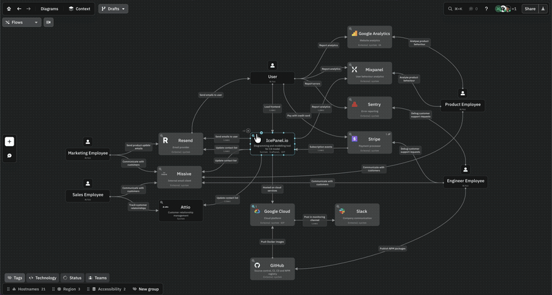

2 Similar applications and what makes aisus different
2.1 Eraser

How it works. Eraser serves system architects. It draws diagrams from cloud accounts, code, configuration databases and spreadsheets. To map code, a team connects a GitHub, GitLab or Azure DevOps repository and prompts for a diagram, and Eraser scans the files on its own servers. Its Eraserbot watches chosen files and draws the diagram again when a pull request touches them.
Business model. Eraser sells seats, with AI usage metered in credits. The free plan has 3 files and 3 AI credits. Business costs $45 per member a month on an annual plan, with 100 credits and one connected repository. Every new AI drawing, including each Eraserbot update, spends credits, so revenue grows with both team size and AI use.
Traction. Eraser was founded in 2020. By May 2024 it had raised $6 million in venture funding, its AI had generated more than one million diagrams, and they reported tenfold growth since adding AI features. Its website shows Microsoft, Amazon, Visa, Gartner, KPMG and Kakao among its customers.
2.2 IcePanel

How it works. IcePanel serves software architects and engineering organisations, and also non-tech teams who need to understand a system. It is a collaborative tool for C4 models, which describe a system at the levels of context, container and component. People build the model by hand, and every diagram draws from that one model. Since October 2026 a model can also be drawn via a plugin for Claude Code and Copilot.
Business model. IcePanel charges per editor, and viewers are always free, so one paying architect can share the model with a whole organisation. The free plan has one editor and 100 objects. Growth costs $40 per editor a month with the MCP server support. Enterprise starts at 50 editors with single-tenant hosting. After Y Combinator the founders chose not to raise further capital, and the company grows on its revenue.
Traction. Two founders launched IcePanel in March 2021 and won their first paying customer, a Fortune 500 company, five months later. It joined Y Combinator's Winter 2023 batch, reached $2.4 million by July 2025. Its team has nine people. Its customer page lists Cisco, BMW, Alphabet and Shift4, among others.
2.3 CodeBoarding

How it works. CodeBoarding serves developers and code reviewers, and is the closest competitor to aisus. It draws interactive architecture maps of a codebase and reviews pull requests as changes to those maps. Its engine runs language servers to find symbols and call graphs in 9 languages, then asks a language model to name and describe the components.
Business model. CodeBoarding follows an open core model. The engine is open source under the MIT licence and free to use. Because users bring their own model key, CodeBoarding carries little of the model cost itself. Pro costs $9.99 a month and offers unmetered use, faster generation and health monitoring, and teams are sold through demos.
Traction. The engine's repository was created in April 2025. On 18 November 2026 it had 2,685 stars and 235 forks, and the VS Code extension had 1,900 installs. CodeBoarding also publishes many example maps of public repositories. Its company page lists a team of three.
2.4 What makes aisus different
Integrated viewing experience
Eraser and IcePanel are web platforms, and CodeBoarding's explore and review modes favour its web app. A diagram in a browser tab sits far from the code it describes. The developer switches windows to check what a box means, and loses their place in both. aisus opens the map in a panel beside the code, in VS Code, Cursor or any other platforms that the developers love.
Visualising plans with diagrams
It is unavoidable that every developers vibe code, they happily accept changes proposed in a long plans in pure text. When a plan grows long, it is hard to picture which parts of the system it touches and the unintended side-effects. aisus's plan skill turns a text spec into a change diagram base on the current system. The developer sees the reach and the risks of a change before any code is written, and can correct the plan while that is still cheap.
An index for agents
The map lists each part of the system with the files and lines that implement it. An agent that reads it first can go straight to the code a task touches, which saves exploration time and tokens on every task. aisus already writes the map into AGENTS.md and CLAUDE.md, the files coding agents read at the start of a session, and Ask answers questions from it. Because aisus knows which boxes are fresh, it can tell the agent which entries to trust. The competitors' MCP servers give agents a diagram or a model without that signal, implying that the diagrams and codebases need to be maintained independently.
2.5 Where aisus falls short
Grounding
CodeBoarding's relationships come from static analysis, which no language model can invent. aisus's come from an agent and are checked against evidence rules, and correct citations do not guarantee correct groupings. Pilot users raised map accuracy as a concern in Progress Report 2. This could be our future because having a benchmark will give more credibility with our tool.
Breadth
Eraser and IcePanel serve audiences and diagram types that aisus deliberately leaves out, such as presentation diagrams, business processes and future-state designs. We accept this shortfall because we want to focus on the developer experience which we have more domain knowledge in.
2.6 Threats
Convergence. The incumbents are adopting the idea of generating diagrams with the user's own agent. IcePanel's plugin of 22 October 2026 and Eraser's MCP server both show it. However, usually these geneartions have poor version control and changes might not be accurate, aisus could fill the gap here.
Agents' own indexes. Agent tools also build their own repository indexes and memory files. If those summaries become good enough, the agent half of the pitch weakens and the developer half has to carry it.
Sources
- Eraser: eraser.io, pricing, codebase diagrams, Eraserbot, customers, Business Insider, May 2024
- IcePanel: icepanel.io, pricing, customers, IcePanel's journey to $2 mil, Y Combinator profile, IcePanel plugin
- CodeBoarding: codeboarding.org, engine repository, GitHub Action, VS Code extension, company page